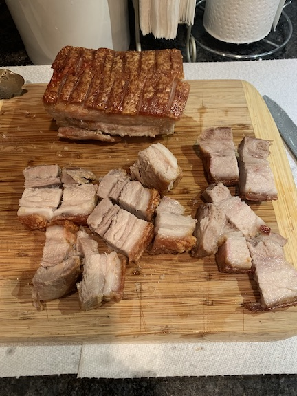

Chicharones

Crispy Chicharones
Delicious Chicharones
Ingredients:
Steps:
- Prick the Skin
- Score the Skin
- Boat the belly in foil
- Cover with Rock Salt. It will extract moister (will not be salty)
- Put in the Oven on Convection Bake - 60 min @ 180c / 350F
- Remove ALL Salt
- Brush the Skin with Vinegar (you won’t Taste it)
- Put in the oven, Broil/Grill, bottom rack (furthest away from the heat), 25 min @ 250c / 480 F